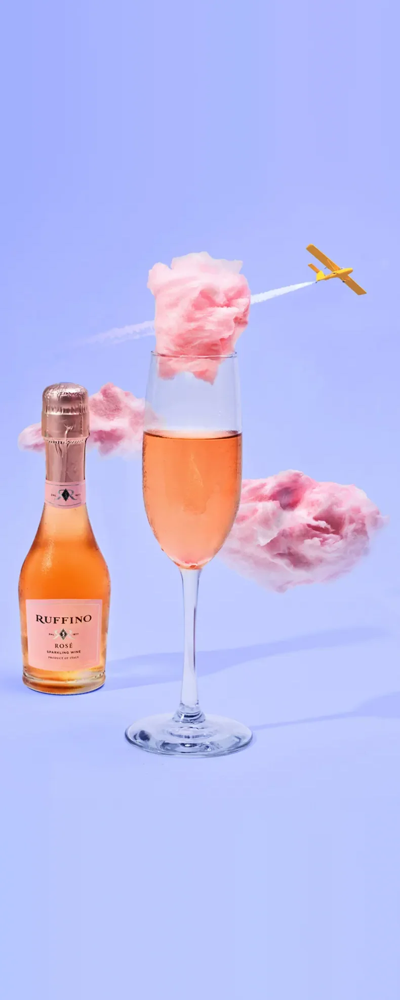
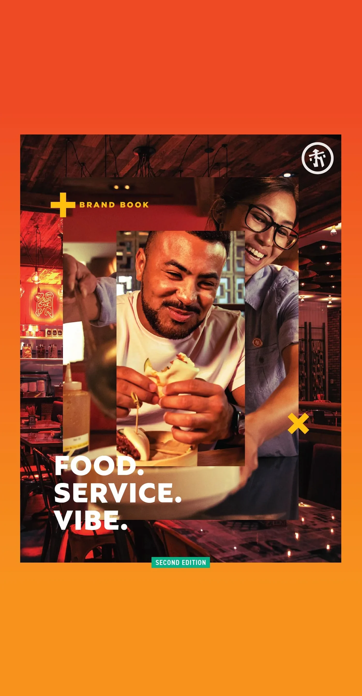
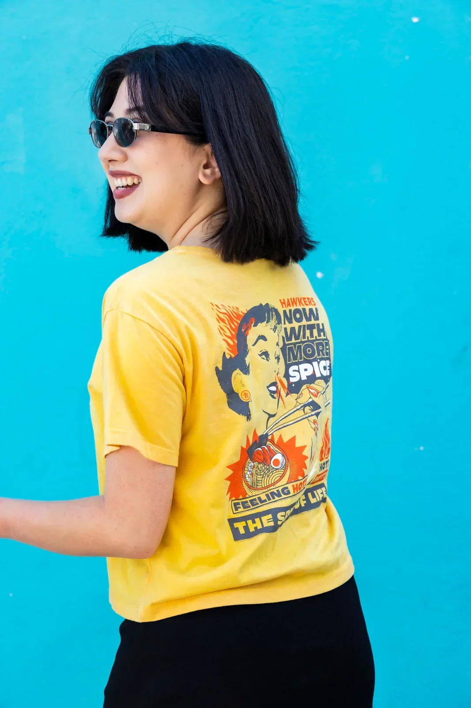
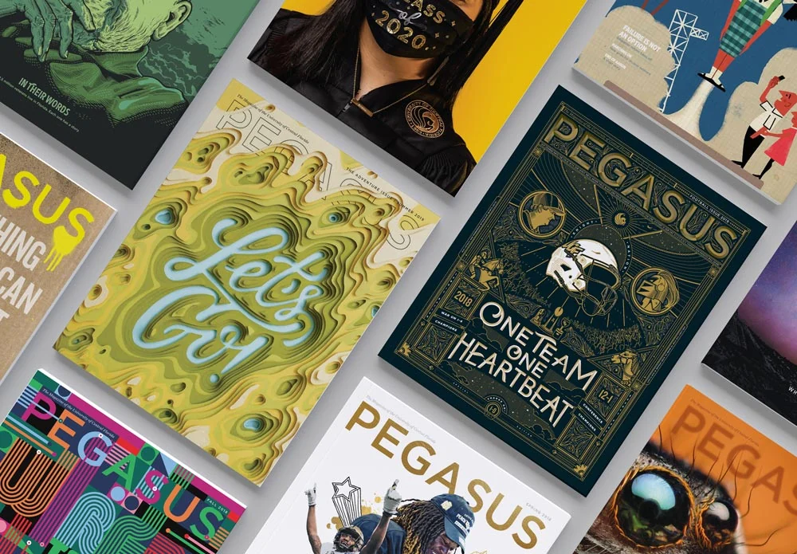
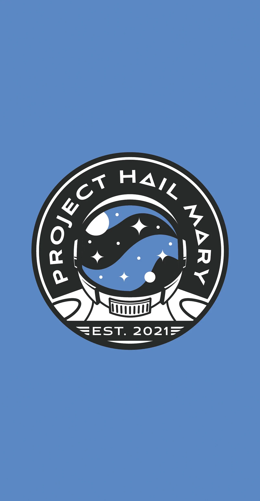

Brand systems, illustration and graphic design for restaurants, universities and personal projects.
Design +
Branding

Hawkers brunchBrand campaign, menu and art direction
Hawkers brandingBrand identity and creative direction
Hawkers apparelApparel and merch design
UCF brandingEditorial, admissions and print design Environmental designMurals, neon, wall wraps and signage
Environmental designMurals, neon, wall wraps and signage
Other worksIllustration and identity